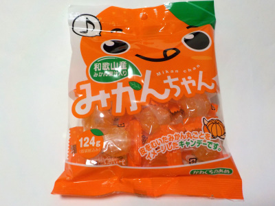

川口製菓のみかんちゃん
2022/08/23

昔からある感じのみかん飴です。みかん果汁と砂糖のシンプルな甘さがいいです。
飴の形がデコボコしていて表面積が多いので、口の中で溶けやすいです。甘さが濃くて美味しかったです。
和歌山県和歌山市岩橋1556-2
2022/08/23

昔からある感じのみかん飴です。みかん果汁と砂糖のシンプルな甘さがいいです。
飴の形がデコボコしていて表面積が多いので、口の中で溶けやすいです。甘さが濃くて美味しかったです。